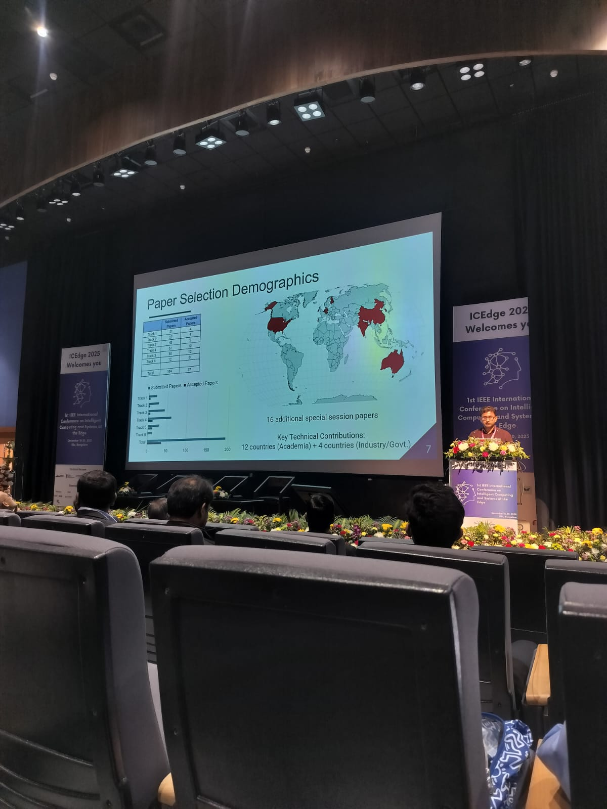

Research publication
Edge-AI Driven Non-contact Soil Moisture Estimation
Chhavi Singh, Chinmay Deo, Roop Pahuja · ICEdge · 2025

Research summary
Abstract
Soil moisture is a critical parameter in agriculture, directly impacting irrigation planning, crop yield, and soil health. Traditional contact-based sensing methods, while accurate, are often labor-intensive, costly, and unsuitable for large-scale or real-time monitoring. This paper proposes a noncontact, image-based approach to soil moisture estimation using machine learning models deployed on embedded hardware. We evaluate three classifiers: a pre-trained VGG16 model, Random Forest Regressor, and Support Vector Machine (SVM). Among these, the SVM achieved the highest classification accuracy under controlled laboratory conditions. The best-performing model was successfully deployed on a Raspberry Pi, enabling a low-cost, noninvasive, edge-based solution for soil moisture monitoring. This system demonstrates strong potential for precision agriculture, smart irrigation, and lab-scale research applications.
Publication information
Publication type
Part of the story
Paper Selection Demographics
Our paper was one of the twelve selected amongst 61 submissions to track 4: AIoT Circuits and Emerging Applications.
